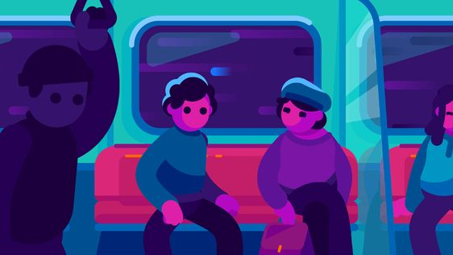
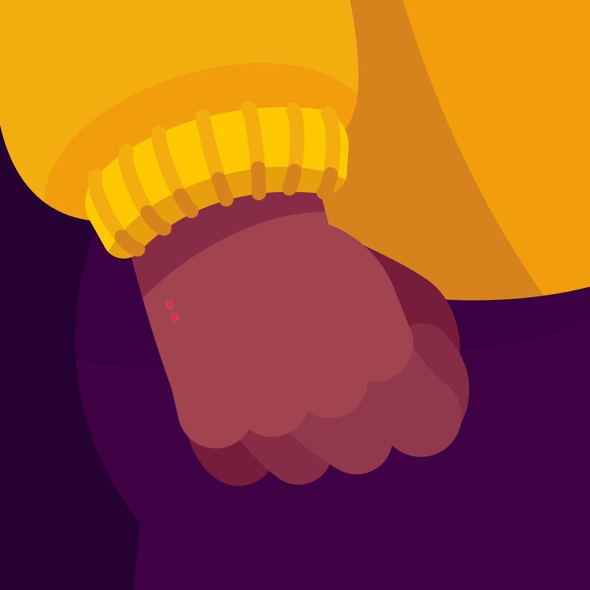

BlaBlaCar
Publicité
Brief
La demande derrière ce projet a été de suivre un audio de 10 s afin de produire une vidéo dynamique pour BlaBlaCar.
Concept
J'ai suivi le style graphique de la chaine Youtube Kurzgesagt.
Leur style est basé sur du flatdesign très coloré.
Inspirations

